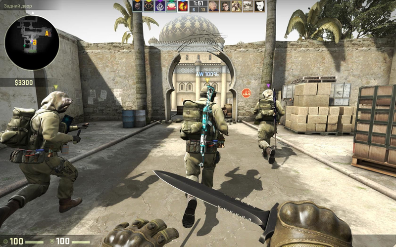
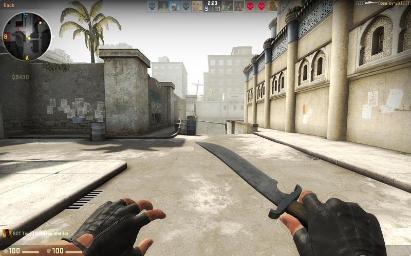
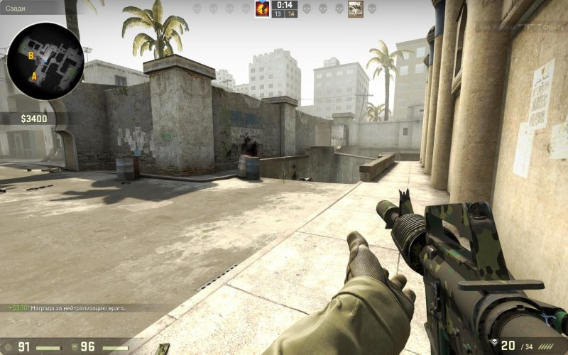
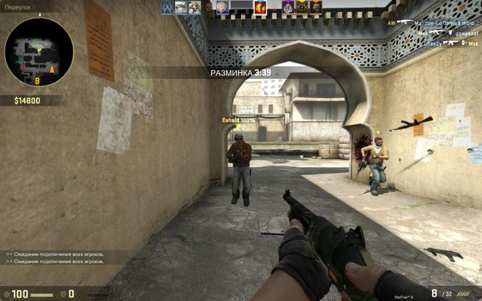
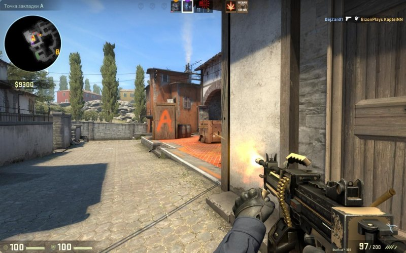
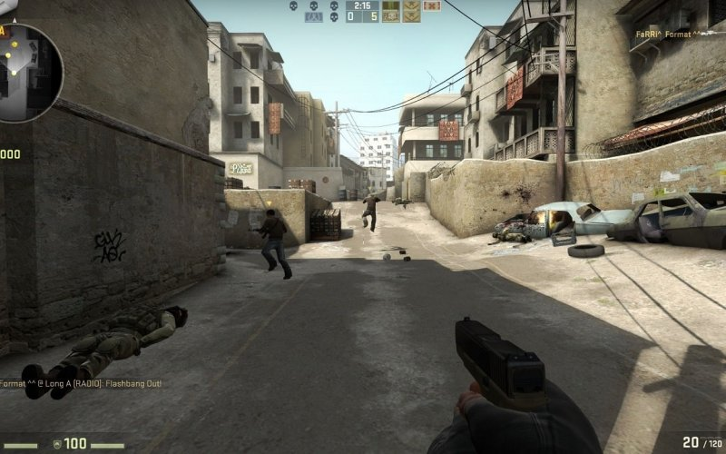
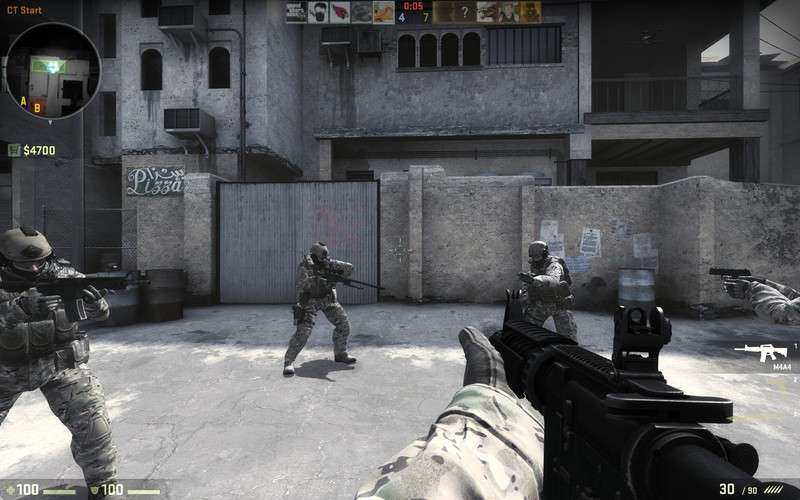
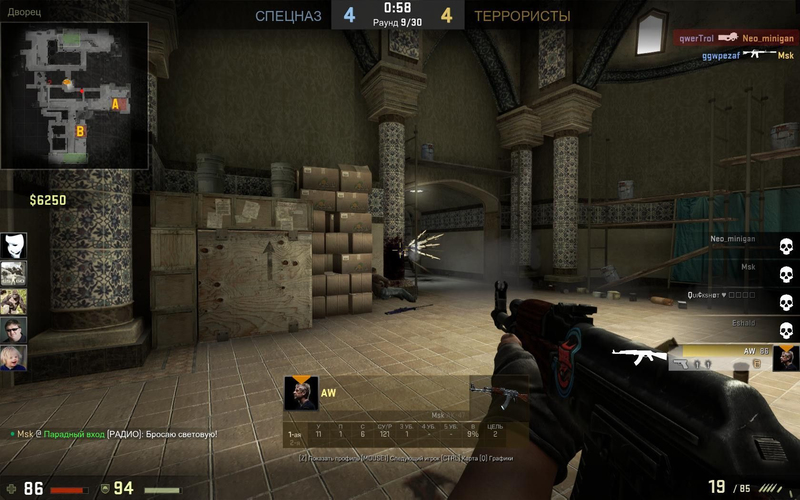

Counter-Strike Global Offensive








Что же такое CS GO?свернуть
- CS GO это когда раскраски оружия стоят дороже крутых игровых девайсов.
- CS GO это когда ты обязан дропнуть свой красивый калаш всей команде.
- CS GO это когда открываешь 20 сундуков и получаешь 20 кусков синего г**на.
- CS GO это когда тебя добавляют школьники и предлагают over 9000 сундуков в обмен на твой нож.
- CS GO это когда тебя добавляет школьник и начинает выпрашивать в подарок шмотку ценой в 3500 рублей, приводя при этом аргумент "да ты ж богатый, что тебе стоит!".
- CS GO это когда тебе по 10 раз в день присылают ссылки на трояны в надежде обчистить твой инвентарь.
- CS GO это когда тебя выгоняют только потому что ты Русский.
- CS GO это когда ты спалил свой стул после игры в соревновательном режиме.
- CS GO это когда "глобалы" создают по 10 аккаунтов и получают удовлетворение, играя против "калашей".
- CS GO это когда ты Russian Noob, если остался против пятерых, убил четверых но не добил пятого.
- CS GO это когда ты Russian Noob при счете 21-7-10, а у ближайшего тиммейта 8-0-16.
- CS GO это когда ты выучил польский и шведский за одну-две катки.
- CS GO это когда в соревновательном режиме поляков больше, чем в самой Польше.
- CS GO это когда ты в одиночку открываешь А, а бомба уже про***на на Б.
- CS GO это когда на твои советы и вопросы тебе отвечают "stfu Russian".
- CS GO это когда утратил три звания за день только из-за того, что каждый раз играешь против "глобалов", играющих со второго аккаунта.
- CS GO это когда каждый третий тиммейт - набустенный сильвер.
- CS GO это когда против тебя играет пять ♥♥♥♥♥♥♥♥♥♥ с АВП.
- CS GO это когда одного "беркута" и четырех "калашей" кидает против пяти "супримов".
- CS GO это когда высаживаешь все 30 патронов в одного ♥♥♥♥♥♥♥♥♥ и наносиишь 99 in 7, а тот рандомным выстрелом попадает тебе в голову.
- CS GO это когда VAC показательно банит профессиональных игроков, но не может забанить ♥♥♥♥♥♥♥♥♥♥, который простреливает всю команду через три стены, имея при этом 2.2 часа в игре.
Все это CS GO!!! Не Болейте!!!!